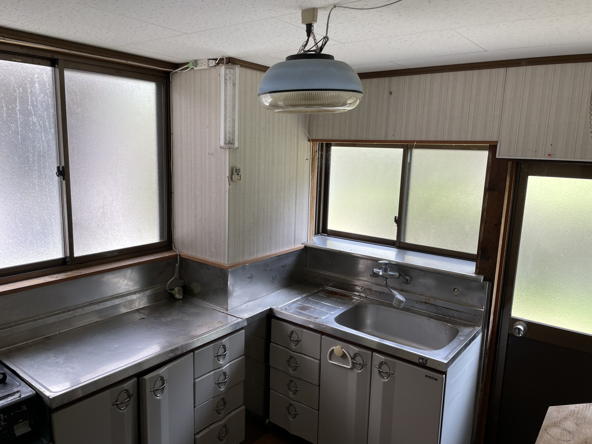
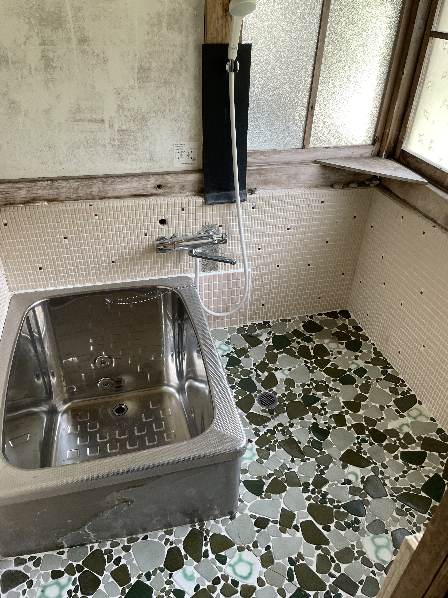
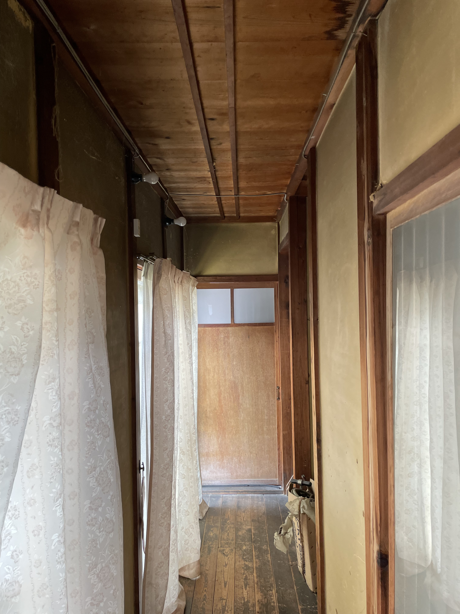
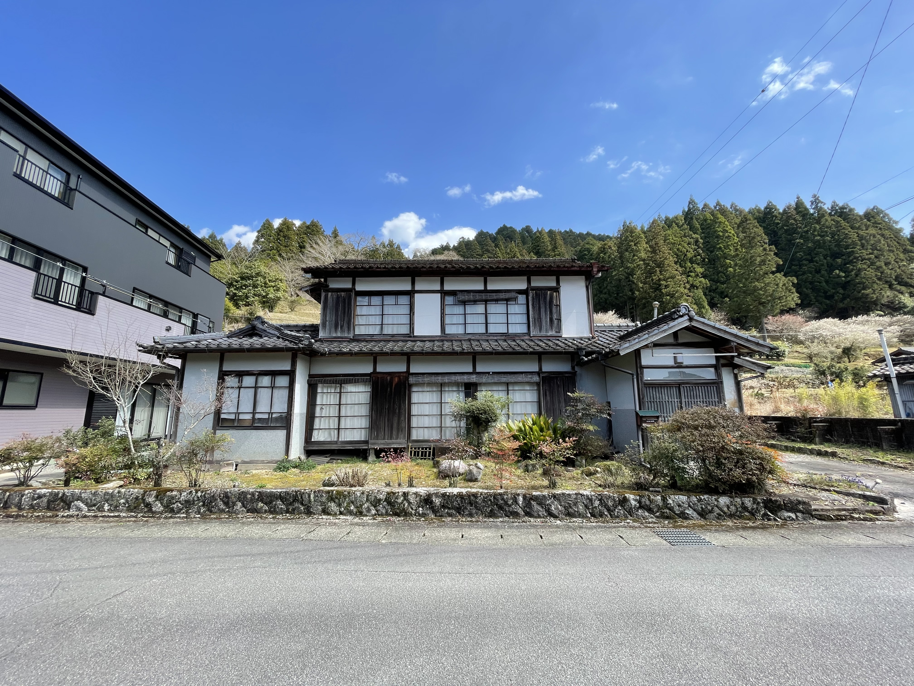
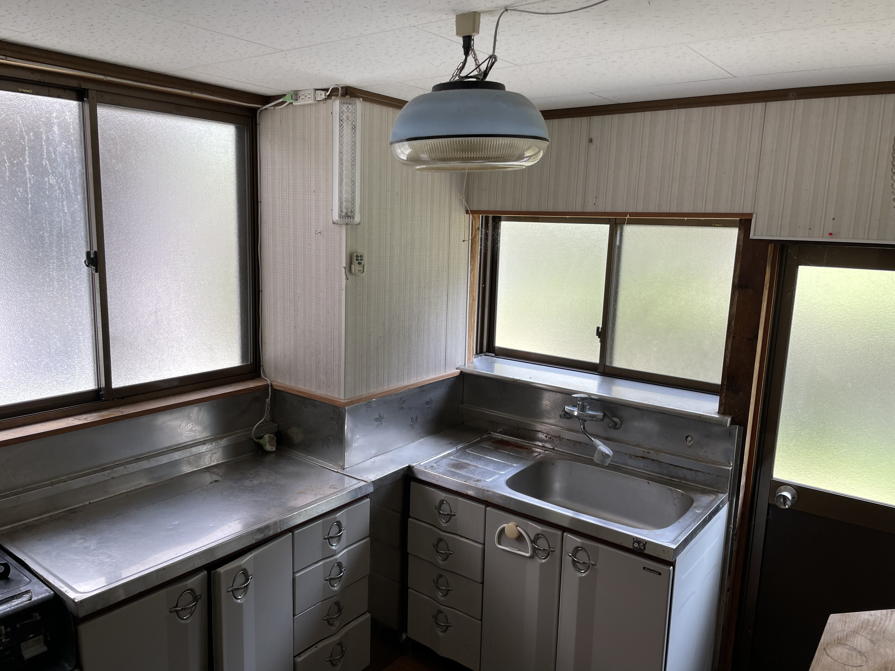
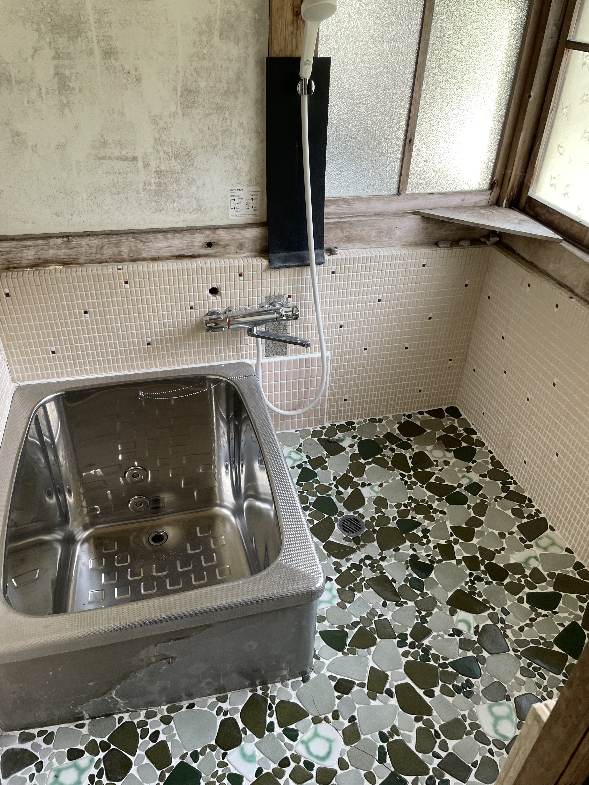
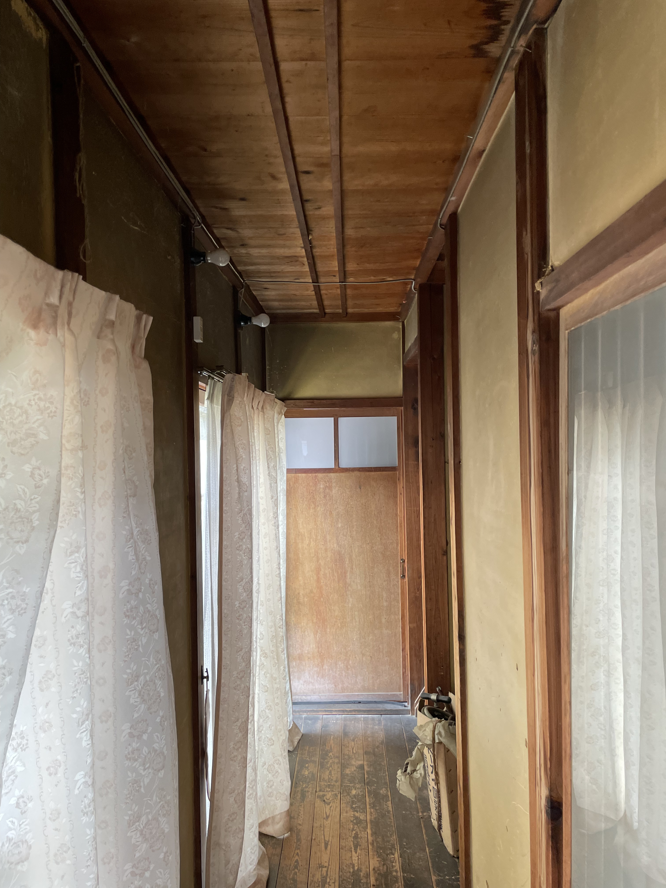
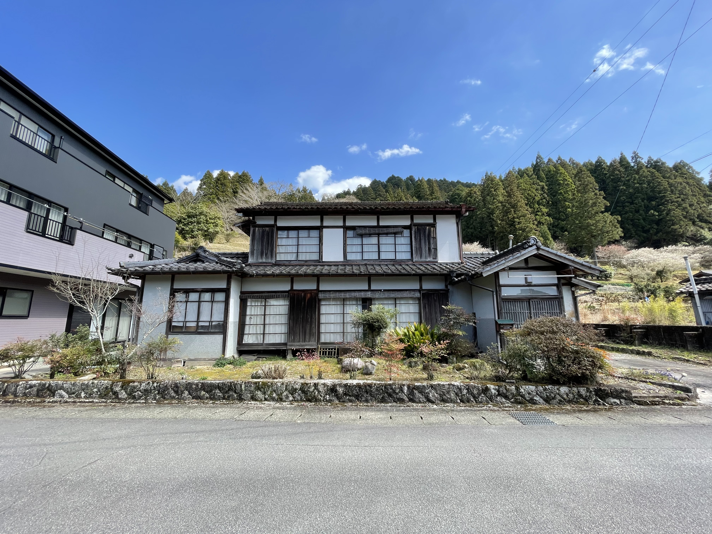

設楽町の古民家賃貸｜格安で借りられる一軒家・戸建て
自然と日常が同じ距離にある暮らしを、愛知県設楽町で。
愛知県設楽町にある古民家の賃貸物件（一軒家・戸建てタイプ）です。 家賃は3万円の格安設定で、DIYや小商いも可能。 「設楽町で古民家を借りたい」「戸建て賃貸を探している」方向けの情報ページです。
自然と日常が同じ距離にある暮らしを、愛知県設楽町で。
愛知県設楽町にある古民家の賃貸物件（一軒家・戸建てタイプ）です。 家賃は3万円の格安設定で、DIYや小商いも可能。 「設楽町で古民家を借りたい」「戸建て賃貸を探している」方向けの情報ページです。
愛知県設楽町にある古民家の賃貸物件です。
一軒家（戸建て）タイプで、家賃は3万円（相談可）の格安設定。
古民家ならではの木の温もりを残しつつ、DIYで手を入れながら暮らせます。
設楽町の中でも山が近く、静かで暮らしやすい立地。
大きなドラッグストアまで徒歩3分、道の駅（地元野菜・惣菜・定食あり）まで徒歩7分。
自然と日常が同じ距離にある、ちょうどいい田舎暮らしができます。
家賃：30,000円（相談可）
敷金・礼金なし／契約期間1年〜
家の裏には昔に積まれた石垣が残っています。
土地と時間を受け継ぎながら暮らすような、やわらかな空気のある家です。
 









暮らしを整えるためのDIYは歓迎します。
壁の漆喰塗り、棚作り、床の張り替えなどOK（事前相談）。
外観や構造を変える工事は不可です。
制作、施術、小さな販売、読書会、パンやコーヒーなど、
暮らしの延長にある小商いは相談のうえ可能です。
不特定多数が出入りする店舗や大きな音を伴う活動は不可です。
長野県原村でデザインやブランディングの仕事をしています。
古民家を引き継ぎながら暮らしを育てることを大切にしています。
設楽のこの家は、
山と集落の静けさがあり、日常とのバランスが取れた場所です。
丁寧に暮らしたい方に、おすすめの物件です。
設楽町は愛知県東三河エリアの山あいにある町で、自然が豊かで暮らしやすい環境です。 この物件は「古民家を格安で借りたい」「戸建てで静かに暮らしたい」方に最適です。 駐車場2台付き、一軒家タイプの賃貸物件で、DIYや小商いも可能。 自然と人の暮らしが共存する設楽町で、新しい暮らしを始めてみませんか？
キーワード：設楽町 古民家 賃貸物件 格安 一軒家 戸建て 田舎暮らし
興味を持ってくださった方は、以下のフォームからご連絡ください。
Googleフォームで問い合わせる（お名前・住まい・希望の暮らし方などをお聞きします）